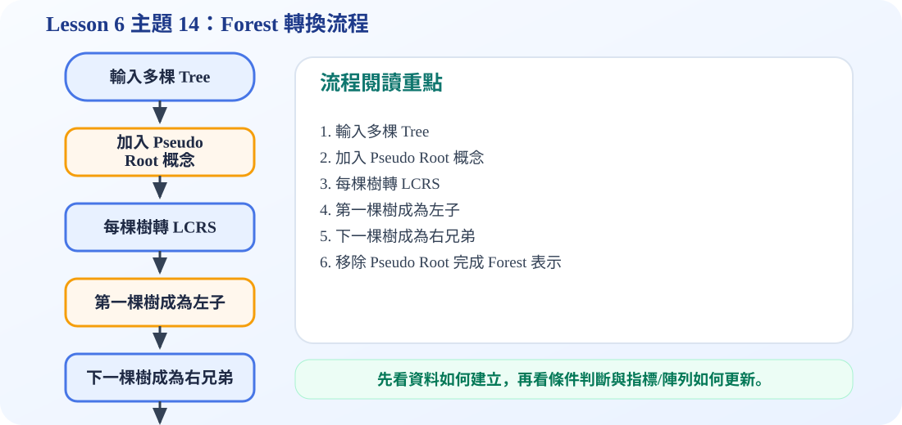

森林轉二元樹流程圖
一、Forest 的定義
Forest 是一組互不相交的 trees。若一棵 tree 移除 root，root 底下的每一棵 subtree 就會形成一個 forest。因此 tree 和 forest 可以互相轉換。
二、為什麼森林可以轉成二元樹？
一般樹的每個節點可能有很多 children，不容易用固定欄位表示。left-child right-sibling 的想法是：每個節點只需要兩個指標，一個指向最左邊的 child，另一個指向右邊最近的 sibling。這樣就能用二元樹節點形式表示一般樹或森林。
三、轉換規則
第一個 child 放在 leftChild；同一層的其他 sibling 依序用 rightSibling 串起來。若有多棵樹，第一棵樹的 root 與第二棵樹的 root 也可以用 rightSibling 串接。
C 程式碼：Forest 的 Left-Child Right-Sibling 表示
/*
中文註解版程式：forest_lcrs_demo.c
說明：主題 14：Forest 的 Left-Child Right-Sibling 表示法。將多棵一般樹串成可用二元指標處理的結構。
閱讀方式：先看資料結構定義，再看操作函式，最後看 main() 如何測試。
*/
// 匯入標準輸入輸出函式庫，提供 printf / scanf 等功能。
#include <stdio.h>
// 匯入標準函式庫，提供 malloc / free / exit 等記憶體與程式控制功能。
#include <stdlib.h>
// 定義節點結構：資料欄位存節點內容，指標欄位負責連到其他節點。
typedef struct Node {
char data;
struct Node *leftChild; // first child
struct Node *rightSibling; // next sibling
} Node;
// 建立新節點：配置記憶體、填入資料，並把左右指標初始化為 NULL。
Node* createNode(char data) {
Node* node = (Node*)malloc(sizeof(Node));
node->data = data;
node->leftChild = NULL;
node->rightSibling = NULL;
return node;
}
// LCRS 的 preorder：先拜訪目前節點，再走 leftChild，最後走 rightSibling。
void preorderLCRS(Node* root) {
if (root == NULL) return; // 遞迴終止條件：空節點不需要處理
printf("%c ", root->data); // 拜訪目前節點並輸出資料
preorderLCRS(root->leftChild);
preorderLCRS(root->rightSibling);
}
// 主程式：建立測試資料，呼叫上方函式，觀察輸出結果。
int main() {
Node *A = createNode('A');
Node *B = createNode('B');
Node *C = createNode('C');
Node *D = createNode('D');
Node *E = createNode('E');
Node *F = createNode('F');
Node *G = createNode('G');
Node *H = createNode('H');
Node *I = createNode('I');
// Forest: A has children B,C,D; E has child F; G has children H,I
// Convert to left-child right-sibling form.
A->leftChild = B; B->rightSibling = C; C->rightSibling = D;
A->rightSibling = E;
E->leftChild = F;
E->rightSibling = G;
G->leftChild = H; H->rightSibling = I;
printf("Preorder of forest in LCRS form: ");
preorderLCRS(A);
printf("\n");
return 0;
}
可編輯 C 程式範例：含中文註解與線上編輯器
這一段提供可直接修改的 C 程式碼。可以按「複製程式」貼到線上編輯器執行，也可以下載 .c 檔案。
程式題目教學內容：Forest 的 Left-Child Right-Sibling 表示
一、程式題目講解
本題示範如何把森林或一般樹用 Left-Child Right-Sibling 形式表示。學生需要理解 forest 可以轉成類似二元樹的指標結構。
二、完整程式碼
完整可執行程式碼已保留在上方「可編輯 C 程式範例：含中文註解與線上編輯器」區塊中，檔名為 forest_lcrs_demo.c。該程式碼已加入中文註解，學生可以直接複製到 OnlineGDB、Programiz 或 OneCompiler 執行。
三、程式執行結果
Preorder of forest in LCRS form: A B C D E F G H I Preorder 輸出 A B C D E F G H I，代表程式依照 LCRS 連結順序走訪整個森林；leftChild 代表進入子樹，rightSibling 代表移到下一棵同層節點或下一棵樹。
四、程式流程圖與流程圖說明
本頁下方已保留原本的程式流程圖。閱讀流程圖時，可以依序掌握「初始化資料或節點 → 執行主要函式或判斷 → 輸出結果」的過程。先建立多個節點並設定 leftChild 與 rightSibling，再從森林第一棵樹的 root 開始 preorder。每拜訪一個節點後，先走 leftChild，再走 rightSibling。
五、重要函數與語法說明
createNode()：建立森林節點；preorderForest()：走訪 LCRS 結構；leftChild：連到第一個孩子；rightSibling：連到下一個兄弟或下一棵樹。
六、整體說明
本題重點是森林不一定需要每個節點存很多孩子指標，只要用 leftChild 與 rightSibling 就能表示多分支結構。
程式流程圖：Forest 轉換流程
下圖是本主題對應的程式執行流程，適合搭配本頁 C 程式碼一起看。

流程講解
- Forest 是多棵互不相交的樹。
- 程式可先想像加入一個 pseudo root，把多棵樹接成一棵。
- 接著用 left-child right-sibling 規則轉換。
- 最後移除 pseudo root，就得到 forest 對應的 binary tree 表示。
這張流程圖把本頁程式的執行順序整理成一條清楚路徑。閱讀時先看輸入與資料如何建立，再看條件判斷、指標或陣列索引如何改變，最後用輸出結果確認程式邏輯是否正確。